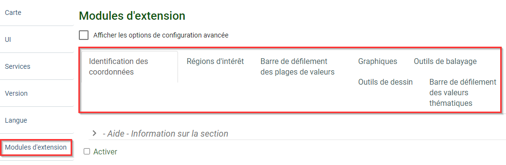

Outil de création pour la PGF – l’arrière-scène des modules d’extension de la PGF
Qu’est-ce l’« outil de création » ?
L’outil de création pour la PGF est une application Web qui offre un environnement convivial où vous pouvez facilement activer un module d’extension, accéder aux services cartographiques comme entrée du module d’extension, configurer le module, ainsi que tester et valider le fichier de configuration.
L’interface de l’outil de création (Figure 4) peut être divisée en trois zones :
1) Le volet de navigation (à gauche) permet à l’utilisateur de se déplacer entre les différents menus de l’application.
2) Le panneau de configuration (au centre) : où se trouve l’ensemble des paramètres de configuration.
3) Le sommaire (à droite) : cette section permet à l’utilisateur de valider la configuration et d'obtenir un aperçu des cartes configurées. Le sommaire permet de repérer les erreurs survenues lors de la configuration.
Utilisation de l’outil de création pour configurer un module d’extension – un cas d’utilisation
Le flux de travail commence par l’ajout d’une couche, suivi par l’activation d’un module d’extension, et se termine par la validation et l’intégration (Figure 5).
Figure 5 : L'outil de création - Flux de travail
Ajouter une nouvelle couche
Étape 1. Dans le volet de navigation, selectionner le menu Carte.
Étape 2. Selectionner l'onglet Couches dans les options et cliquer sur le bouton Ajouter pour pouvoir ajouter des couches au visualiseur (Figure 6).
Figure 6 : Outil de création – Ajouter une nouvelle couche
Étape 3. Sélectionner le Type de couche qui sera chargé. Les options sont nombreuses. Déterminer l’option qui correspond le mieux au type de service cartographique qui convient à ce qui est publié.
Étape 4. Donner un Nom qui sera affiché pour la couche. Cette information est obligatoire (Figure 7).
Figure 7 : Outil de création – Configurer la couche
Étape 5. Fournir l'URL du service cartographique. Il s’agit de l’adresse pointant vers le service Web de la couche. Vous le trouverez dans la métadonnée du jeu de données. Il doit correspondre au type fourni dans le type de couche.
Étapes supplémentaires : certains types de couches nécessitent des informations supplémentaires avant d’être chargés.
Dynamique d'ESRI (esriDynamic)
Étape 5a.Cliquer sur le bouton Ajouter sous Couches utilisées. Cela ouvrira une autre section où vous pourrez entrer l'Index de la couche. L'Index fait référence à l’"ID" du service cartographique. Par exemple, pour cette couche (emplacement des usines de transformation du bois), l’ID est 0, correspondant à l'Index (Figure 8).
Figure 8 : Exemple de détail d’un service cartographique et de son identifiant (ID) – Emplacement des usines de transformation du bois
Étape 5b. Il est également possible (facultatif) de saisir un nom descriptif pour la couche sous le champ Nom. Toutefois, cela aura préséance sur le nom provenant du service.
OGC WMS
Étape 5a. Cliquer sur le bouton Ajouter, sous Couches utilisées (Figure 9). Cela ouvrira une autre section où l'ID de l'Entrée de couche du WMS peut être saisi (Figure 10). Il s’agit de la valeur entre la balise "< Name >…< /Name >" de la couche. Il est également possible de saisir un nom descriptif pour la couche sous le champ Nom. Toutefois, cela aura préséance sur le nom provenant du service.
Figure 9 : Outil de création – Ajouter une couche (OGC WMS)Figure 10 : Outil de création – Ajouter une couche (OGC WMS) (suite)
Étape 5b. Le OGC WMS comprend également des options comme Type du protocoles d’information utilisé pour les éléments (feature info mime type) et Type du protocoles utilisé pour la légende (Figure 9). Le Type du protocoles d’information utilisé pour les éléments indique le format qui devrait être demandé dans le service cartographique WMS. Le Type du protocole utilisé pour la légende indique le format de la légende qui devrait être demandé dans le service cartographique WMS.
Étape 6. Aller aux boutons Valider et Aperçu du volet Sommaire. Appuyer sur le bouton Valider garantira que tous les paramètres sont vérifiés et qu’ils répondent aux exigences.
Astuce
On peut ajouter autant de couches que souhaité.
Remarque
Si des problèmes sont détectés, la section contenant l’erreur sera automatiquement mise en évidence dans le volet Sommaire (pastille rouge avec un point d’exclamation).
Activer les modules d'extension
Maintenant que les couches sont chargées et que l’on a vérifié qu’elles fonctionnent correctement. Aller au menu Modules d'extension. Celui-ci se trouve en bas du panneau de navigation (à gauche) (Figure 11).
Le menu Modules d'extension présente tous les modules d’extension disponibles pour les données de série chronologique ainsi que d’autres modules d’extension optionnels. Chaque module d’extension possède des paramètres particuliers qui doivent être configurés pour fonctionner correctement avec les données (voir la section suivante pour plus de détails).

Figure 11 : Outil de création – Activer les modules d’extension
Validation et intégration
Dernière étape : valider et obtenir un aperçu pour s’assurer que tout fonctionne comme prévu (Figure 12).
Figure 12 : Outil de création – Le sommaire
Une fois le flux de travail terminé et la validation réussie, un fichier de configuration .json peut être généré et enregistré (Figure 13). Ce fichier peut être ultérieurement téléversé de nouveau dans l’outil de création de la PGF si des modifications sont requises.
Figure 13 : Outil de création – Enregistrer et téléverser
Outil de création et soutien
L’auteur et spécialiste de la maintenance des modules d’extension de la PGF et de l’outil de création est Johann Levesque, PGF, RNCan. Pour signaler un problème, veuillez créer un billet (New issue) à partir du Répertoire GitHub prévu à cet effet. Ajouter l’étiquette du module d’extension et toute autre information pertinente. Pour l’instant ce site n’est disponible qu’en anglais.